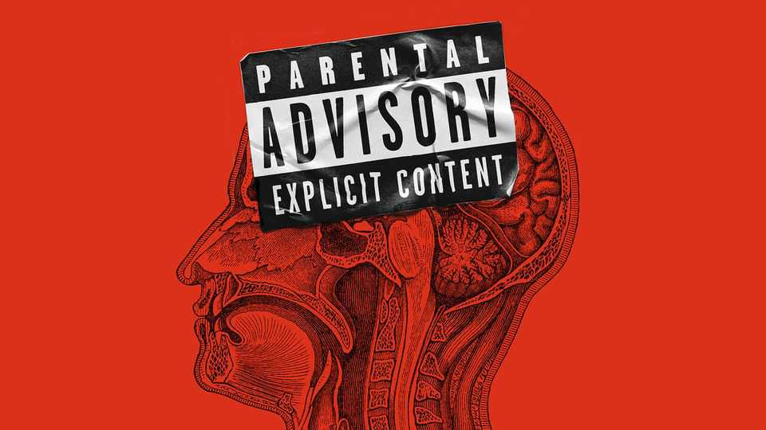

Britain’s ban on some pornography is based on flimsy evidence
Once again, correlation and causation are not the same

Nov 5th 2026
Parents are aghast. Many young Britons appear to be choking one another during sex. According to a survey by the Institute for Addressing Strangulation, part of a charity, 66% of sexually experienced 16- to 34-year-olds have been on the receiving end. Not all consented to it in advance. The government blames porn. So, from November 6th, pornography depicting strangulation or suffocation will be outlawed. So will porn depicting incest, and fantasies in which performers pretend to be underage.
The notion that porn changes behaviour has been around at least since 1986, when the Meese report in America argued that it was likely to cause an increase in sexual violence. But the evidence is far from conclusive. A review in 2016, looking at 20 years of porn research, concluded that methodological shortcomings and “biases in the literature” prevent researchers from drawing conclusions about porn’s effect on adolescents. A further review in 2023 similarly concluded that most studies had “substantial limitations” that preclude any firm conclusions.
Nicole Prause, a neuroscientist, says that studies often find a correlation between what people watch and what they do. They have done so with choking. But researchers disagree on which way causality flows. “It’s a chicken-and-egg situation,” she says. Anti-porn campaigners point to a body of research showing that people who use more pornography engage in more sexual harassment and aggression. But who uses the most porn? Generally it is teenage boys with a tendency towards sensation-seeking and a troubled family history. Those are all risk factors for aggressive sexual behaviour in their own right.
Even the independent review of pornography by Lady Bertin, which the British government has used to justify its restrictions, noted that “research has commonly confused correlation and causation”. Those two things are always hard to unpick, but especially so when it comes to adolescents’ porn use. An ideal study would involve exposing some to pornography (or, teenagers being what they are, to more porn) but that would be unethical.
Some evidence comes from studies that follow the same people over a period of time to assess whether changes in porn use predict later changes in behaviour. Researchers in Croatia followed over 1,500 students for three years. They confirmed a well-established link between “hostile masculinity”, a personality type, and sexual aggression. But they found no evidence that pornography use increased an individual’s odds of sexual aggression—a conclusion, they wrote, that is “difficult to reconcile with the view that pornography use plays a causal role in male sexual violence”.
Countries that have repealed strict porn laws provide a natural experiment. They are not perfect, since a ban on pornography does not make it disappear. Still, research comparing rates of sexual crime before and after the liberalisation of porn laws in the Czech Republic, Denmark, Germany, Japan and Sweden found no evidence of a relationship between pornography and sexual violence.
Young people do learn about niche sexual practices from pornography. It has introduced some to the concept of choking. But other media carry the message, too. Earlier this year Romania came third in the Eurovision song contest with a song titled “Choke Me”. In one American study, a young woman claimed to have first come across choking by reading smutty fan fiction about the band One Direction.
Where someone first sees something does not necessarily tell you why they want to do it. A study in Australia tested several variables to see what might predict whether an individual has a positive perception of choking during sex. Having seen choking in porn had little predictive value. Having previously tried choking or having discussed it with friends was much more likely to predict positive attitudes towards it. Other surveys find that the majority of sexual choking is consensual and pleasurable for those involved. Perhaps young people are choking each other during sex mostly because they like it.■